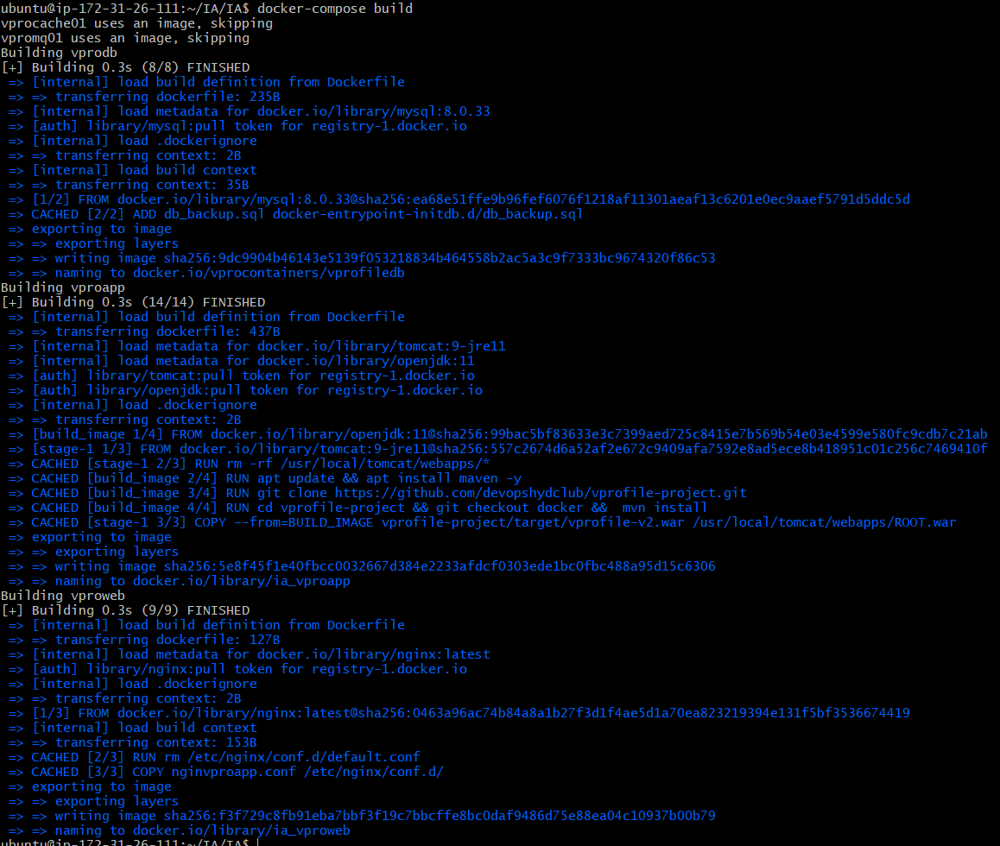
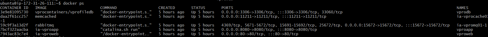
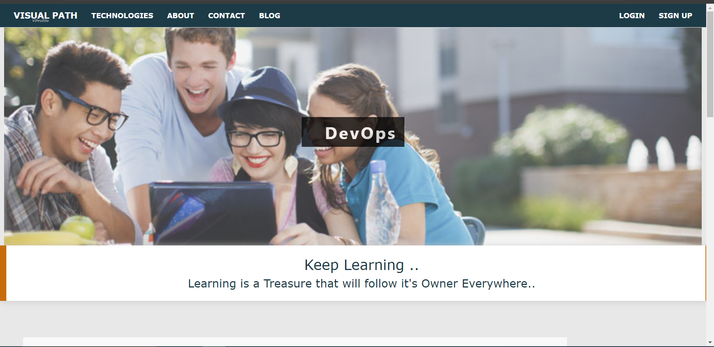
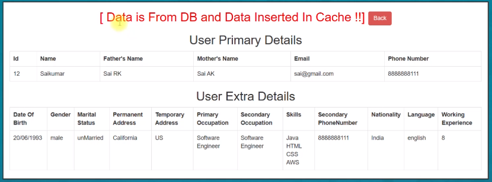

Three-Tier Application with Docker
This repository contains a three-tier application built using Docker, utilizing a multi-container setup. The application consists of three layers: presentation layer, application layer, and data layer.
Architecture Overview
Presentation Layer: Responsible for presenting information to the user. Built with HTML, CSS, and JavaScript.
Application Layer: Contains the business logic and functionality of the application. Built with JAVA.
Data Layer: Stores and manages the data used by the application. Utilizes MYSQL.
Prerequisites
- JDK 1.8 or later
- Maven 3 or later
- MySQL 5.6 or later
Technologies
- Spring MVC
- Spring Security
- Spring Data JPA
- Maven
- JSP
- MySQL
Database Setup
Installation Steps for MySQL on Ubuntu 14.04:
sudo apt-get update
sudo apt-get install mysql-serverImporting Database Dump:
- Locate the
accountsdb.sqlfile in the/src/main/resourcesdirectory. - This file contains a MySQL dump of the database schema and data.
- Run the following command to import the dump into the MySQL database:
mysql -u <user_name> -p accounts < accountsdb.sqlGetting Started
Prerequisites
Docker installed on your machine
Steps
- Clone this repository to your local machine:
git clone https://github.com/oadityakhachar/Cloud_IA.git
- Navigate to the project directory:
cd IA
- Database Dockerfile:
FROM mysql:8.0.33
LABEL "PROJECT"="VPROFILE"
LABEL "AUTHOR"="Aditya"
ENV MYSQL_ROOT_PASSWORD="vprodbpass"
ENV MYSQL_DATABASE="accounts"
ADD db_backup.sql docker-entrypoint-initdb.d/db_backup.sql
- OpenJDK Dockerfile:
FROM openjdk:11 AS BUILD_IMAGE
RUN apt update && apt install maven -y
RUN git clone https://github.com/devopshydclub/vprofile-project.git
RUN cd vprofile-project && git checkout docker && mvn install
FROM tomcat:9-jre11
RUN rm -rf /usr/local/tomcat/webapps/*
COPY --from=BUILD_IMAGE vprofile-project/target/vprofile-v2.war /usr/local/tomcat/webapps/ROOT.war
EXPOSE 8080
CMD ["catalina.sh","run"]
- Nginx Dockerfile:
FROM nginx
RUN rm /etc/nginx/conf.d/default.conf
COPY nginvproapp.conf /etc/nginx/conf.d/
- Docker-compose.yml file:
version: '3.8'
services:
vprodb:
build: ./Docker-files/db
image: vprocontainers/vprofiledb
container_name: vprodb
ports:
- "3306:3306"
volumes:
- vprodbdata:/var/lib/mysql
environment:
- MYSQL_ROOT_PASSWROD=vprodbpass
vprocache01:
image: memcached
ports:
- "11211:11211"
vpromq01:
image: rabbitmq
ports:
- "15672:15672"
environment:
- RABBITMQ_DEFAULT_USER=guest
- RABBITMQ_DEFAULT_PASS=guest
vproapp:
build: ./Docker-files/app
container_name: vproapp
ports:
- "8080:8080"
volumes:
- vproappdata:/usr/local/tomcat/webapps
vproweb:
build: ./Docker-files/web
container_name: vproweb
ports:
- "80:80"
volumes:
vprodbdata:
vproappdata:
- Build the Docker images:
docker-compose build

- Start the Docker containers:
docker-compose up -d

- Access the application in your web browser:
- Details About Docker images:
docker images

- Details About Docker-Compose :
docker-Compose ps
- Details About Docker-Compose Images:
docker-Compose images

Display Screenshot of the Website
DashBoard
Database
Acknowledgements
This project is inspired by Imran teli and their work on (https://github.com/hkhcoder/vprofile-project).